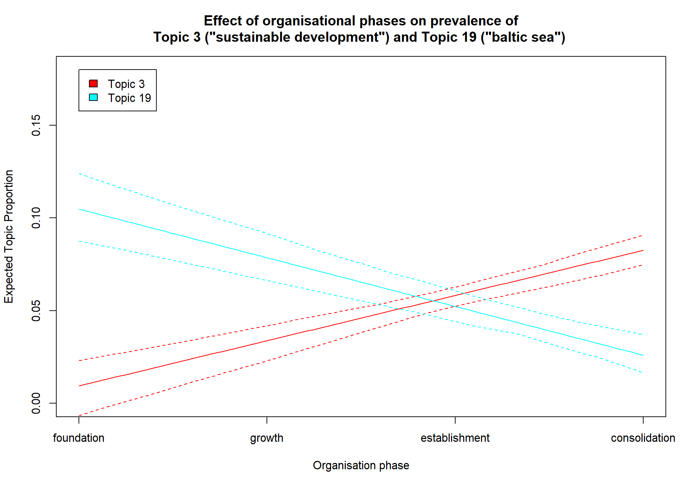
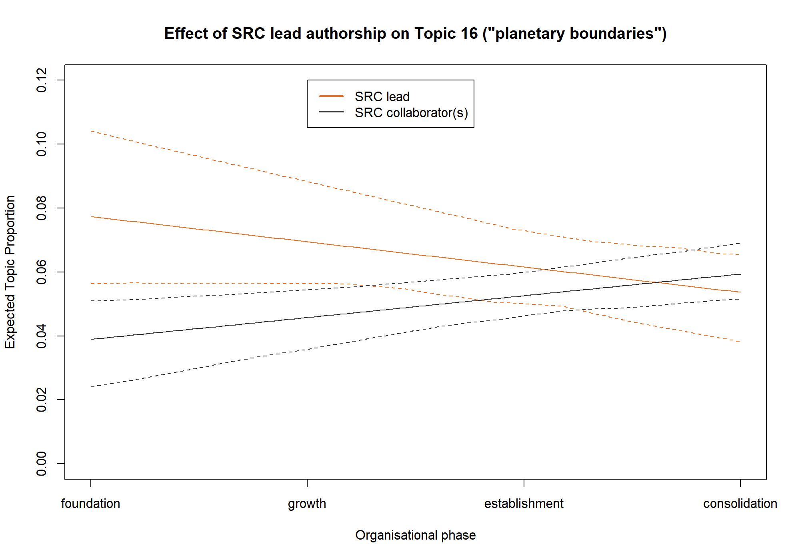

SRC PhD R course Module 9
Structural Topic Modeling
Stefan Daume
16. March 2023
SRC PhD R course Module 9
Structural Topic Modeling
Why topic modelling?
- summarize large text collections
- discover “latent” topics
- text-based causal inferences and testing social science theories
The notion of “latent topics”
How does it work?
- unsupervised, probabilistic classification
- generative model (reverses the document generation process)
Topic modelling algorithms
- LSA - Latent semantic analysis
- LDA - Latent dirichlet allocation (Blei, Ng, and Jordan 2003)
- CTM - Correlated topic model (Blei and Lafferty 2007)
- STM - Structural topic model (Roberts, Stewart, and Tingley 2019)
STM vs “vanilla LDA”
- STM extends CTM (i.e. assumes that topics are correlated)
- STM can incorporate arbitrary document meta-data into the topic model
Basic text mining concepts
- documents
- corpus
- tokens
- terms
Basic steps
- get documents to analyse
- preprocess
- create a corpus
- tokenize
- create document-term matrix
- (evaluate alternative topic numbers)
- decide on K, the number of topics, and fit a topic model
- (validate semantic integrity of the topic model)
R packages to use
- quanteda
- tidytext
- (snowballc)
- (spacyr)
- stringr
- stm
An example: SRC publications

A simplistic approach
| Term | N |
|---|---|
| social | 265 |
| system | 256 |
| ecolog | 248 |
| ecosystem | 243 |
| sustain | 216 |
| global | 175 |
| chang | 171 |
| manag | 168 |
| resili | 167 |
ngrams: closer to “topics”
| Term | N |
|---|---|
| social ecolog | 165 |
| ecosystem servic | 146 |
| ecolog system | 81 |
| climat chang | 80 |
| baltic sea | 41 |
| food system | 36 |
| planetari boundari | 36 |
| earth system | 34 |
| regim shift | 32 |
What about temporal trends?

Topic modelling with STM
Questions:
- Which latent topics exists?
- How prominent are they?
- Is the topic prevalence influenced by document variables?
- How are topics related?
Create a document corpus
- Decide what constitutes a document.
- Create a structured representation of documents with unique document identifiers.
Document corpus with quanteda
# read the source documents
src_pubs <- readr::read_csv("./topicmodels/data/src_pubs_annotated.csv",
col_types = "c")
# create a document corpus using quanteda
pubs_corpus <- src_pubs %>%
quanteda::corpus(docid_field = "doc_id", text_field = "abstract")Tokenize with quanteda
# tokenize the document corpus (here we use words as tokens)
pubs_tokens <- pubs_corpus %>%
quanteda::tokens(what = "word",
remove_punct = TRUE,
remove_symbols = TRUE,
remove_numbers = TRUE,
remove_url = TRUE,
remove_separators = TRUE,
split_hyphens = TRUE)Create a ‘document-feature matrix’ with quanteda
# create a document feature matrix and filter the
# features (here by removing common English stopwords)
pubs_dfm <- pubs_tokens %>%
quanteda::dfm(tolower = TRUE) %>%
quanteda::dfm_remove(pattern = quanteda::stopwords("english")) %>%
quanteda::dfm_wordstem()Filter documents and/or terms
# we can apply additional filtering to the document feature matrix
pubs_dfm <- pubs_dfm %>%
quanteda::dfm_remove(min_nchar = 2) %>%
quanteda::dfm_trim(min_docfreq = 2, docfreq_type = "count") %>%
quanteda::dfm_subset(quanteda::ntoken(.) > 2)Fit the STM topic model
# create a native STM representation of the DFM
stm_docs <- quanteda::convert(pubs_dfm, to = "stm")
# we use 20 topics and consider two covariates
src_topics <- stm(documents = stm_docs$documents,
vocab = stm_docs$vocab,
data = stm_docs$meta,
prevalence = ~ organisation_phase * src_author_role,
K = 20,
verbose = TRUE)Inspect the topic model
# list most probable words (different groups of words are available)
summary(src_topics)
# plot the topic shares/probabilities using plot.STM
plot(src_topics, n = 5)Topics - Terms
summary(src_topics)
#> A topic model with 20 topics, 1906 documents and a 5104 word dictionary.
#> Topic 1 Top Words:
#> Highest Prob: fisheri, fish, fisher, poverti, livelihood, scale, market
#> FREX: poverti, fisheri, fisher, livelihood, trap, women, price
#> Lift: ssf, amend, bigger, bought, buy, daw, homarus
#> Score: fisheri, fisher, fish, poverti, market, trap, livelihood
#> Topic 2 Top Words:
#> Highest Prob: govern, institut, global, chang, polici, ocean, sustain
#> FREX: corpor, institut, govern, innov, ocean, crise, compani
#> Lift: gradualist, multin, philanthropi, preexist, anticipatori, cdm, fip
#> Score: govern, ocean, corpor, institut, actor, coevolv, crise
#> Topic 3 Top Words:
#> Highest Prob: develop, sustain, scenario, goal, use, polici, assess
#> FREX: amr, sdgs, goal, scenario, target, achiev, sdg
#> Lift: bsms, carson, cbd, cousin, emptiv, fell, galvan
#> Score: amr, sdgs, scenario, sdg, cbd, goal, ipb
#> Topic 4 Top Words:
#> Highest Prob: urban, citi, green, area, plan, infrastructur, use
#> FREX: urban, citi, garden, gi, green, ug, infrastructur
#> Lift: peri, antithesi, architect, barcelona, cemeteri, cogitatio, colour
#> Score: urban, citi, green, garden, gi, ug, infrastructur
#> Topic 5 Top Words:
#> Highest Prob: climat, chang, risk, impact, carbon, global, adapt
#> FREX: climat, risk, carbon, hazard, mitig, emiss, vulner
#> Lift: grape, gtc, ipcc, wine, cdr, elsler, nc
#> Score: climat, carbon, emiss, risk, hazard, adapt, chang
#> Topic 6 Top Words:
#> Highest Prob: research, sustain, knowledg, transform, scienc, approach, practic
#> FREX: research, transdisciplinari, think, knowledg, disciplin, transform, interdisciplinari
#> Lift: comment, doctor, espa, interdisciplinar, interrog, intract, journalist
#> Score: transdisciplinari, transform, think, research, disciplin, career, engag
#> Topic 7 Top Words:
#> Highest Prob: social, ecolog, system, resili, complex, dynam, adapt
#> FREX: resili, ecolog, social, ses, system, al, deal
#> Lift: armitag, borrini, chapin, malin, unanticip, ostrom, berk
#> Score: resili, social, ses, ecolog, system, adapt, theori
#> Topic 8 Top Words:
#> Highest Prob: ecosystem, servic, es, valu, well, scale, landscap
#> FREX: es, servic, ecosystem, provis, bundl, off, landscap
#> Lift: cum, ditch, fiber, firewood, photograph, québec, tell
#> Score: servic, es, ecosystem, bundl, ebm, landscap, provis
#> Topic 9 Top Words:
#> Highest Prob: shift, fish, regim, reef, coral, sea, chang
#> FREX: reef, coral, cucumb, iuu, vessel, regim, shift
#> Lift: brew, breweri, fiji, iuu, mayott, ppcps, scuba
#> Score: reef, coral, fish, iuu, cucumb, herbivor, vessel
#> Topic 10 Top Words:
#> Highest Prob: natur, human, scienc, data, springer, peopl, decis
#> FREX: media, natur, mental, springer, behavior, children, switzerland
#> Lift: duinen, hollands, ladder, nationa, nff, uenc, enjoy
#> Score: natur, hnc, children, behavior, supplementari, abm, media
#> Topic 11 Top Words:
#> Highest Prob: govern, adapt, learn, actor, network, collabor, stakehold
#> FREX: learn, collabor, student, actor, stakehold, particip, adapt
#> Lift: acf, brunswick, classroom, igitur, man, misalign, multiactor
#> Score: learn, actor, network, collabor, govern, adapt, student
#> Topic 12 Top Words:
#> Highest Prob: communiti, sustain, local, practic, peopl, cultur, divers
#> FREX: biocultur, indigen, discours, redd, justic, sf, power
#> Lift: artifact, biocultur, centralis, cocreat, dune, historic, linguist
#> Score: indigen, redd, biocultur, sf, justic, forest, discours
#> Topic 13 Top Words:
#> Highest Prob: resourc, behaviour, communiti, cooper, user, individu, group
#> FREX: behaviour, cooper, pool, user, attitud, game, harvest
#> Lift: aggress, balines, everyon, hydrocarbon, megapitaria, methanogen, microorgan
#> Score: cooper, behaviour, harvest, templ, attitud, cell, microbi
#> Topic 14 Top Words:
#> Highest Prob: model, network, data, dynam, analysi, approach, use
#> FREX: node, model, statist, network, graph, simul, nonlinear
#> Lift: barabási, brain, chaotic, crossov, eigenanalysi, ep, epla
#> Score: network, model, node, simul, graph, brokerag, statist
#> Topic 15 Top Words:
#> Highest Prob: water, land, use, forest, region, basin, moistur
#> FREX: moistur, water, evapor, watersh, rainfal, soil, precipit
#> Lift: 2layer, arcswat, companion, envelop, eulerian, hydrochem, inund
#> Score: water, moistur, evapor, precipit, rainfal, basin, hydrolog
#> Topic 16 Top Words:
#> Highest Prob: system, human, earth, boundari, global, planetari, tip
#> FREX: planetari, earth, tip, boundari, safe, element, biospher
#> Lift: chemist, destabilis, interglaci, biocid, biogeophys, domino, johan
#> Score: earth, planetari, tip, anthropocen, boundari, safe, human
#> Topic 17 Top Words:
#> Highest Prob: food, product, system, agricultur, aquacultur, farm, environment
#> FREX: farm, aquacultur, food, nutrit, certif, consumpt, product
#> Lift: acid, affluent, agroecolog, aquafe, buck, cargil, carp
#> Score: aquacultur, food, farm, seafood, nutrit, agricultur, farmer
#> Topic 18 Top Words:
#> Highest Prob: speci, habitat, biodivers, landscap, forest, divers, function
#> FREX: patch, habitat, trait, speci, dispers, invas, plant
#> Lift: acacia, amphibian, apart, macroinvertebr, plcas, allometr, arabl
#> Score: speci, habitat, patch, trait, bird, forest, golf
#> Topic 19 Top Words:
#> Highest Prob: sea, baltic, ice, nutrient, indic, ecosystem, increas
#> FREX: baltic, prey, seabird, oxygen, cod, ice, salin
#> Lift: argentatus, auk, biotop, clupea, copepod, deglaci, dissolut
#> Score: baltic, prey, ice, sea, sheet, predat, nutrient
#> Topic 20 Top Words:
#> Highest Prob: manag, conserv, implement, marin, approach, develop, success
#> FREX: manag, conserv, implement, success, restor, protect, european
#> Lift: bureaucraci, iea, virtu, appeal, ec, forsak, voluntarili
#> Score: conserv, manag, marin, implement, protect, lake, planTopic shares

Estimate covariate effects
# this can be estimated for selected topics (here we evaluate all topics)
src_topic_effect <- estimateEffect(1:20 ~ organisation_phase * src_author_role,
stmobj = src_topics,
metadata = stm_docs$meta, uncertainty = "None")
# this summarises the regression stats for the estimated covriate effects
summary(src_topic_effect)Covariate effects summary
summary(src_topic_effect)
#>
#> Call:
#> estimateEffect(formula = 1:20 ~ organisation_phase * src_author_role,
#> stmobj = src_topics, metadata = stm_docs$meta, uncertainty = "None")
#>
#>
#> Topic 1:
#>
#> Coefficients:
#> Estimate Std. Error t value
#> (Intercept) 0.044646 0.009903 4.508
#> organisation_phase -0.003544 0.003116 -1.137
#> src_author_roleSRC lead -0.014301 0.020085 -0.712
#> organisation_phase:src_author_roleSRC lead 0.014651 0.006249 2.345
#> Pr(>|t|)
#> (Intercept) 6.94e-06 ***
#> organisation_phase 0.2556
#> src_author_roleSRC lead 0.4765
#> organisation_phase:src_author_roleSRC lead 0.0192 *
#> ---
#> Signif. codes: 0 '***' 0.001 '**' 0.01 '*' 0.05 '.' 0.1 ' ' 1
#>
#>
#> Topic 2:
#>
#> Coefficients:
#> Estimate Std. Error t value
#> (Intercept) 0.057834 0.009365 6.176
#> organisation_phase -0.003855 0.002956 -1.304
#> src_author_roleSRC lead 0.042470 0.020677 2.054
#> organisation_phase:src_author_roleSRC lead -0.003387 0.006433 -0.527
#> Pr(>|t|)
#> (Intercept) 8.03e-10 ***
#> organisation_phase 0.1923
#> src_author_roleSRC lead 0.0401 *
#> organisation_phase:src_author_roleSRC lead 0.5986
#> ---
#> Signif. codes: 0 '***' 0.001 '**' 0.01 '*' 0.05 '.' 0.1 ' ' 1
#>
#>
#> Topic 3:
#>
#> Coefficients:
#> Estimate Std. Error t value
#> (Intercept) -0.015421 0.010830 -1.424
#> organisation_phase 0.024434 0.003460 7.062
#> src_author_roleSRC lead -0.027061 0.022771 -1.188
#> organisation_phase:src_author_roleSRC lead 0.005170 0.007271 0.711
#> Pr(>|t|)
#> (Intercept) 0.155
#> organisation_phase 2.29e-12 ***
#> src_author_roleSRC lead 0.235
#> organisation_phase:src_author_roleSRC lead 0.477
#> ---
#> Signif. codes: 0 '***' 0.001 '**' 0.01 '*' 0.05 '.' 0.1 ' ' 1
#>
#>
#> Topic 4:
#>
#> Coefficients:
#> Estimate Std. Error t value
#> (Intercept) 0.002749 0.010709 0.257
#> organisation_phase 0.013322 0.003343 3.985
#> src_author_roleSRC lead 0.036979 0.021873 1.691
#> organisation_phase:src_author_roleSRC lead -0.015392 0.006826 -2.255
#> Pr(>|t|)
#> (Intercept) 0.7975
#> organisation_phase 7e-05 ***
#> src_author_roleSRC lead 0.0911 .
#> organisation_phase:src_author_roleSRC lead 0.0243 *
#> ---
#> Signif. codes: 0 '***' 0.001 '**' 0.01 '*' 0.05 '.' 0.1 ' ' 1
#>
#>
#> Topic 5:
#>
#> Coefficients:
#> Estimate Std. Error t value
#> (Intercept) 0.057666 0.009081 6.351
#> organisation_phase -0.000715 0.002882 -0.248
#> src_author_roleSRC lead -0.032324 0.017699 -1.826
#> organisation_phase:src_author_roleSRC lead 0.004950 0.005643 0.877
#> Pr(>|t|)
#> (Intercept) 2.68e-10 ***
#> organisation_phase 0.804
#> src_author_roleSRC lead 0.068 .
#> organisation_phase:src_author_roleSRC lead 0.380
#> ---
#> Signif. codes: 0 '***' 0.001 '**' 0.01 '*' 0.05 '.' 0.1 ' ' 1
#>
#>
#> Topic 6:
#>
#> Coefficients:
#> Estimate Std. Error t value
#> (Intercept) 0.025947 0.011642 2.229
#> organisation_phase 0.017221 0.003586 4.803
#> src_author_roleSRC lead -0.006375 0.025935 -0.246
#> organisation_phase:src_author_roleSRC lead 0.006408 0.008065 0.795
#> Pr(>|t|)
#> (Intercept) 0.0259 *
#> organisation_phase 1.69e-06 ***
#> src_author_roleSRC lead 0.8059
#> organisation_phase:src_author_roleSRC lead 0.4269
#> ---
#> Signif. codes: 0 '***' 0.001 '**' 0.01 '*' 0.05 '.' 0.1 ' ' 1
#>
#>
#> Topic 7:
#>
#> Coefficients:
#> Estimate Std. Error t value
#> (Intercept) 0.082118 0.010309 7.966
#> organisation_phase -0.003740 0.003276 -1.142
#> src_author_roleSRC lead 0.061211 0.021947 2.789
#> organisation_phase:src_author_roleSRC lead -0.009352 0.006842 -1.367
#> Pr(>|t|)
#> (Intercept) 2.8e-15 ***
#> organisation_phase 0.25380
#> src_author_roleSRC lead 0.00534 **
#> organisation_phase:src_author_roleSRC lead 0.17181
#> ---
#> Signif. codes: 0 '***' 0.001 '**' 0.01 '*' 0.05 '.' 0.1 ' ' 1
#>
#>
#> Topic 8:
#>
#> Coefficients:
#> Estimate Std. Error t value
#> (Intercept) 0.069380 0.010506 6.604
#> organisation_phase -0.007208 0.003319 -2.172
#> src_author_roleSRC lead 0.031961 0.020632 1.549
#> organisation_phase:src_author_roleSRC lead -0.007999 0.006436 -1.243
#> Pr(>|t|)
#> (Intercept) 5.18e-11 ***
#> organisation_phase 0.030 *
#> src_author_roleSRC lead 0.122
#> organisation_phase:src_author_roleSRC lead 0.214
#> ---
#> Signif. codes: 0 '***' 0.001 '**' 0.01 '*' 0.05 '.' 0.1 ' ' 1
#>
#>
#> Topic 9:
#>
#> Coefficients:
#> Estimate Std. Error t value
#> (Intercept) 0.068938 0.011121 6.199
#> organisation_phase -0.009056 0.003435 -2.637
#> src_author_roleSRC lead -0.037034 0.023500 -1.576
#> organisation_phase:src_author_roleSRC lead 0.004746 0.007216 0.658
#> Pr(>|t|)
#> (Intercept) 6.94e-10 ***
#> organisation_phase 0.00844 **
#> src_author_roleSRC lead 0.11521
#> organisation_phase:src_author_roleSRC lead 0.51080
#> ---
#> Signif. codes: 0 '***' 0.001 '**' 0.01 '*' 0.05 '.' 0.1 ' ' 1
#>
#>
#> Topic 10:
#>
#> Coefficients:
#> Estimate Std. Error t value
#> (Intercept) 0.010030 0.008649 1.160
#> organisation_phase 0.010724 0.002696 3.978
#> src_author_roleSRC lead 0.032303 0.018345 1.761
#> organisation_phase:src_author_roleSRC lead -0.013236 0.005682 -2.330
#> Pr(>|t|)
#> (Intercept) 0.2463
#> organisation_phase 7.21e-05 ***
#> src_author_roleSRC lead 0.0784 .
#> organisation_phase:src_author_roleSRC lead 0.0199 *
#> ---
#> Signif. codes: 0 '***' 0.001 '**' 0.01 '*' 0.05 '.' 0.1 ' ' 1
#>
#>
#> Topic 11:
#>
#> Coefficients:
#> Estimate Std. Error t value
#> (Intercept) 0.075390 0.011996 6.285
#> organisation_phase -0.006918 0.003679 -1.880
#> src_author_roleSRC lead -0.003092 0.023707 -0.130
#> organisation_phase:src_author_roleSRC lead 0.008681 0.007492 1.159
#> Pr(>|t|)
#> (Intercept) 4.06e-10 ***
#> organisation_phase 0.0602 .
#> src_author_roleSRC lead 0.8962
#> organisation_phase:src_author_roleSRC lead 0.2467
#> ---
#> Signif. codes: 0 '***' 0.001 '**' 0.01 '*' 0.05 '.' 0.1 ' ' 1
#>
#>
#> Topic 12:
#>
#> Coefficients:
#> Estimate Std. Error t value
#> (Intercept) -0.011075 0.009473 -1.169
#> organisation_phase 0.015347 0.002965 5.176
#> src_author_roleSRC lead 0.020110 0.019337 1.040
#> organisation_phase:src_author_roleSRC lead -0.002208 0.005978 -0.369
#> Pr(>|t|)
#> (Intercept) 0.243
#> organisation_phase 2.51e-07 ***
#> src_author_roleSRC lead 0.298
#> organisation_phase:src_author_roleSRC lead 0.712
#> ---
#> Signif. codes: 0 '***' 0.001 '**' 0.01 '*' 0.05 '.' 0.1 ' ' 1
#>
#>
#> Topic 13:
#>
#> Coefficients:
#> Estimate Std. Error t value
#> (Intercept) 0.021503 0.010392 2.069
#> organisation_phase 0.004321 0.003272 1.320
#> src_author_roleSRC lead 0.009608 0.020414 0.471
#> organisation_phase:src_author_roleSRC lead -0.004137 0.006213 -0.666
#> Pr(>|t|)
#> (Intercept) 0.0387 *
#> organisation_phase 0.1869
#> src_author_roleSRC lead 0.6379
#> organisation_phase:src_author_roleSRC lead 0.5056
#> ---
#> Signif. codes: 0 '***' 0.001 '**' 0.01 '*' 0.05 '.' 0.1 ' ' 1
#>
#>
#> Topic 14:
#>
#> Coefficients:
#> Estimate Std. Error t value
#> (Intercept) 0.0613327 0.0118761 5.164
#> organisation_phase 0.0005693 0.0039102 0.146
#> src_author_roleSRC lead -0.0312862 0.0252872 -1.237
#> organisation_phase:src_author_roleSRC lead -0.0010552 0.0078997 -0.134
#> Pr(>|t|)
#> (Intercept) 2.66e-07 ***
#> organisation_phase 0.884
#> src_author_roleSRC lead 0.216
#> organisation_phase:src_author_roleSRC lead 0.894
#> ---
#> Signif. codes: 0 '***' 0.001 '**' 0.01 '*' 0.05 '.' 0.1 ' ' 1
#>
#>
#> Topic 15:
#>
#> Coefficients:
#> Estimate Std. Error t value
#> (Intercept) 0.081449 0.012112 6.724
#> organisation_phase -0.010470 0.003733 -2.805
#> src_author_roleSRC lead -0.034113 0.024865 -1.372
#> organisation_phase:src_author_roleSRC lead 0.008661 0.007611 1.138
#> Pr(>|t|)
#> (Intercept) 2.32e-11 ***
#> organisation_phase 0.00508 **
#> src_author_roleSRC lead 0.17025
#> organisation_phase:src_author_roleSRC lead 0.25524
#> ---
#> Signif. codes: 0 '***' 0.001 '**' 0.01 '*' 0.05 '.' 0.1 ' ' 1
#>
#>
#> Topic 16:
#>
#> Coefficients:
#> Estimate Std. Error t value
#> (Intercept) 0.031033 0.010259 3.025
#> organisation_phase 0.007024 0.003254 2.158
#> src_author_roleSRC lead 0.052981 0.022622 2.342
#> organisation_phase:src_author_roleSRC lead -0.014621 0.007082 -2.065
#> Pr(>|t|)
#> (Intercept) 0.00252 **
#> organisation_phase 0.03103 *
#> src_author_roleSRC lead 0.01928 *
#> organisation_phase:src_author_roleSRC lead 0.03910 *
#> ---
#> Signif. codes: 0 '***' 0.001 '**' 0.01 '*' 0.05 '.' 0.1 ' ' 1
#>
#>
#> Topic 17:
#>
#> Coefficients:
#> Estimate Std. Error t value
#> (Intercept) 2.695e-02 1.271e-02 2.121
#> organisation_phase 9.440e-03 4.011e-03 2.354
#> src_author_roleSRC lead -1.349e-02 2.709e-02 -0.498
#> organisation_phase:src_author_roleSRC lead 8.708e-05 8.589e-03 0.010
#> Pr(>|t|)
#> (Intercept) 0.0340 *
#> organisation_phase 0.0187 *
#> src_author_roleSRC lead 0.6185
#> organisation_phase:src_author_roleSRC lead 0.9919
#> ---
#> Signif. codes: 0 '***' 0.001 '**' 0.01 '*' 0.05 '.' 0.1 ' ' 1
#>
#>
#> Topic 18:
#>
#> Coefficients:
#> Estimate Std. Error t value
#> (Intercept) 0.103513 0.011125 9.304
#> organisation_phase -0.019887 0.003546 -5.607
#> src_author_roleSRC lead -0.025342 0.022278 -1.138
#> organisation_phase:src_author_roleSRC lead 0.003138 0.007077 0.443
#> Pr(>|t|)
#> (Intercept) < 2e-16 ***
#> organisation_phase 2.35e-08 ***
#> src_author_roleSRC lead 0.255
#> organisation_phase:src_author_roleSRC lead 0.657
#> ---
#> Signif. codes: 0 '***' 0.001 '**' 0.01 '*' 0.05 '.' 0.1 ' ' 1
#>
#>
#> Topic 19:
#>
#> Coefficients:
#> Estimate Std. Error t value
#> (Intercept) 0.133454 0.013996 9.535
#> organisation_phase -0.027227 0.004244 -6.416
#> src_author_roleSRC lead -0.092681 0.029048 -3.191
#> organisation_phase:src_author_roleSRC lead 0.022110 0.009069 2.438
#> Pr(>|t|)
#> (Intercept) < 2e-16 ***
#> organisation_phase 1.76e-10 ***
#> src_author_roleSRC lead 0.00144 **
#> organisation_phase:src_author_roleSRC lead 0.01486 *
#> ---
#> Signif. codes: 0 '***' 0.001 '**' 0.01 '*' 0.05 '.' 0.1 ' ' 1
#>
#>
#> Topic 20:
#>
#> Coefficients:
#> Estimate Std. Error t value
#> (Intercept) 0.074715 0.007447 10.032
#> organisation_phase -0.010328 0.002356 -4.383
#> src_author_roleSRC lead 0.021797 0.014623 1.491
#> organisation_phase:src_author_roleSRC lead -0.004486 0.004680 -0.958
#> Pr(>|t|)
#> (Intercept) < 2e-16 ***
#> organisation_phase 1.24e-05 ***
#> src_author_roleSRC lead 0.136
#> organisation_phase:src_author_roleSRC lead 0.338
#> ---
#> Signif. codes: 0 '***' 0.001 '**' 0.01 '*' 0.05 '.' 0.1 ' ' 1Example 1: Topics over time

Example 2: SRC lead authorship

Example 3: SRC lead authorship

Example 4: Combined effects

Exercise
- fit the model with a different K
- test a different prevalence formula (for example
n_authorsoropen_access) - estimate the covariate effect for this model
- adapt the examples in the script for other topics and covariates
Thank You!
Key Resources
- quanteda R package
- stm: An R Package for Structural Topic Models (Xie, Allaire, and Grolemund 2022)
- oolong R package
References
Blei, David M., and John D. Lafferty. 2007. “A correlated topic model of Science.” The Annals of Applied Statistics 1 (1): 17–35. http://projecteuclid.org/euclid.aoas/1183143727.
Blei, David M., Andrew Y. Ng, and Michael I. Jordan. 2003. “Latent dirichlet allocation.” The Journal of Machine Learning Research 3 (March): 993–1022. http://dl.acm.org/citation.cfm?id=944919.944937.
Roberts, Margaret E., Brandon M. Stewart, and Dustin Tingley. 2019. “Stm: An R package for structural topic models.” Journal of Statistical Software 91 (1): 1–40. https://doi.org/10.18637/jss.v091.i02.
Xie, Yihui, J. J. Allaire, and Garrett Grolemund. 2022. “R Markdown: The Definitive Guide.” https://bookdown.org/yihui/rmarkdown/.
Colophon
SRC PhD R course Module 9 — Structural Topic Modeling" by Stefan Daume
Presented on 16. March 2023.
This presentation can be cited using: doi:…
PRESENTATION DETAILS
Author/Affiliation: Stefan Daume, Stockholm Resilience Centre, Stockholm University
Presentation URL: https://sdaume.github.io/r-course-module-3/slides/textmining-module.html
Presentation Source: [TBD]
Presentation PDF: [TBD]
CREDITS & LICENSES
This presentation is delivered with the help of several free and open source tools and libraries. It utilises the reveal.js presentation framework and has been created using RMarkdown, knitr, RStudio and Pandoc. highlight.js provides syntax highlighting for code sections. MathJax supports the rendering of mathematical notations. PDF and JPG copies of this presentation were generated with DeckTape. Please note the respective licenses of these tools and libraries.
If not noted and attributed otherwise, the contents (text, charts, images) of this presentation are Copyright © 2023 of the Author and provided under a CC BY 4.0 public domain license.